| Balatonfured | Siófok | Keszthely | Badacsonytomaj | Balatonalmádi | Tihany | Kápalanfured |
|---|
Balatonfüred város Veszprém megyében, a Balatonfüredi járás székhelye. A település eredetileg Szent István király korától 1946-ig Zala vármegyéhez tartozott.[3] „A Balaton északi partjának fővárosa”, a Balaton-part legrégebbi üdülőhelye. Kereskedelmi szálláshelyeken eltöltött vendégéjszakák tekintetében Magyarország hatodik legnépszerűbb települése. Ismertségét a Balaton közelsége mellett elsősorban szénsavas forrásainak és mediterrán jellegű klímájának köszönheti. Jelentős vitorláskikötő.
Területe három részből tevődik össze: a vasútvonal két oldalán húzódó őstelepülés, a gyógyforrások körül kialakult régi gyógyhely, valamint ennek két oldalához csatlakozóan a legújabb Füred üdülő/idegenforgalmi életét befogadó központok, szállók, kemping, üdülőtelep stb. térsége. Az egykori Balatonarács községet 1954-ben csatolták hozzá.
Lankás dombok közt fekszik a Balaton északi partján. A városon halad át a 71-es főút, valamint a Budapestről Tapolcára vezető egyvágányú vasút is. A szomszédos községek Tihany, Aszófő, Balatonszőlős, Csopak, valamint az errefelé szokásos elnevezésű Öreg-hegy, továbbá a Tamás-, György- és Péter-hegyek határolják.
A Füred név eredetileg a fürj madár nevének für, fűr alakjából származik és jelentése fürjes. A kezdetben a helyi savanyúvízforrásokra, majd magára a Balatonra települő fürdőkultúra és a településnek ebben betöltött kiemelkedő szerepe miatt a 19. századra a név átértelmeződött és fürdő értelmet kezdtek tulajdonítani neki. Ennek az átértelmezésnek eredménye lett aztán több mesterséges helynévadás, mint Biharfüred, Káptalanfüred, Lillafüred, Mátrafüred vagy Tátrafüred.
Füred térségét már az ősember is lakta. Első ismert lakói a rómaiak voltak, emléküket számos kiásott épületrom és síremlék jelzi. Füred nevével írásos emlékként először 1211-ben találkozunk, a Tihanyi apátság egy birtokösszeírásában. Mai területén az Árpád-korban hét település állt, Füred és Arács mellett Kék, Magyaré, Papsoka, Siske. A város legrégebbi, a Kéki-patak partján épült, később elhagyott településrésze ma szőlőterület, maga a Kéki-forrás még működik. 1717-ben említik savanyúvizét, majd 1729-ben újra. 1722-ben vegyelemeztették és gyógyvízzé nyilvánították. Ez idő tájt már állt egy fa fürdőház, majd nemsokára egy kőház, kiadó szobákkal vendégek számára. Később kétemeletes új fürdőház is épült. A református hitközség tagjainak anyakönyvezése 1724-ben indult, a római katolikusoké 1800-ban, az izraelitáké pedig 1863-ban.
Eötvös Károly az Utazás a Balaton körülben írja: „Öt házból állott valamikor Balatonfüred. A tihanyi barátok vendéglője, a szentgyörgyi Horváth-ház, a pápai Eszterházyak hajléka, a fürdőház és a kápolna. De ólak nagy számban lovak és kocsik számára.”[5] [...] „a Balatonnak ez volt egyetlen fürdőhelye [...] még nem volt Kenese, Almádi, Alsóörs, Fülöp, Badacsony, Balatonföldvár, Boglár, Fonyód.”
A város a 19. század első felében, a reformkor idején indult fejlődésnek. A vendégek szórakozását a nyári időben fából készült színház szolgálta. 1831-ben megépült a Balatonfüredi Színház, a Dunántúl első magyar nyelvű kőszínháza, melyet Kisfaludy Sándor alapított adományokból, apátsági és népi segítséggel. A színház létrehozásához, többek között, Kerkapoly István tapolcai főszolgabíró járult hozzá (ekkor Balatonfüred még a tapolcai járáshoz tartozott). Szentgyörgyi Horváth János rendezte 1825. július 26-án a füredi Horváth-házban az első Anna-bált lánya, Anna Krisztina tiszteletére. Az Anna-bál hagyománnyá vált, azóta minden évben megrendezik. Széchenyi István kezdeményezésére innen indult el 1846-ban az első balatoni gőzhajó, a Kisfaludy. Füreden hajógyár is létesült. A század első felében előbb találkozóhelye volt a Dunántúl nagy családjainak, majd, főként a kiegyezés utáni időszakban, kedvelt találkozóhelye lett a politikusoknak, művészeknek.
"Sok jó barát, sok szép asszony, sok ifjúkori ismerős, sok országos férfi ott mulat egy csoportban. Hamvadó szív újra lángra lobban, száradt kedélyt vidámság harmatja felüdíti; múltnak emlékei, hazafi remények ott röpködnek a lelkek előtt, mint lepkék a virágos kertben. Húzza a cigány minden este, minden délben, minden hajnalon. A németet is össze lehet szidni, kegyetlenül. Abban is meg lehet állapodni, kik a legnagyobb hazafiak s kik az igaz költők. A pecsovicsokról is ki lehet sütni, mikor és mily áron vette meg őket a bécsi udvar."
– Eötvös Károly: Utazás a Balaton körül, Balatonfüred fejezet; 1900
Ekkor kezdődött a település nagyobb fellendülése, feltöltötték a tó partját, kialakították a sétányt, magánvillák épültek, megépült a kórház déli szárnya.
Jókai Mór itteni villájában írta Az arany ember című híres regényét, melynek egy része a Balatonnál játszódik. Az épület ma múzeum, ahol láthatjuk az író bútorait, személyes tárgyait. 1884-ben itt alakult meg az első magyar vitorlásegyesület, a Stefánia Yacht Club. Balatonfüred, mint nagyközség 1891-ben 1788 magyar lakossal rendelkezett, a faluban földmíves és vincellérképezdével összekötött szeretetház működött. A szőlőültetvények nagy részét a filoxéra elpusztította.
A második világháború után, az 1960-as években indult a város újabb fejlődési szakasza. 1966-ban itt tartották a XXVII. FICC (Nemzetközi Camping Caravanning Club) Rallyt, erre épült 4000 személyes kempingje. 1971-ben Füredet Magyarország első gyógy- és üdülőhelyi városává nyilvánították. Balatonfüred 1987 óta „A szőlő és a bor nemzetközi városa”.
| Év | Lélekszám |
|---|---|
| 1920 | 2,604 |
| 1930 | 3,149 |
| 1941 | 3,826 |
| 1949 | 5,335 |
| 1960 | 7,561 |
| 1980 | 12,697 |
| 1990 | 13,520 |
| 2001 | 12,956 |
| 2011 | 12,979 |
| 2019 | 12,800 |
| Nép | % |
|---|---|
| magyar | 86,5 |
| német | 2,5 |
| cigány | 0,5 |
| román | 0,3 |
| nem nyilatkozott | 13,3 |
| Vallás | % |
|---|---|
| római katolikus | 39,7 |
| református | 13,1 |
| evangélikus | 2,8 |
| görögkatolikus | 0,4 |
| felekezeten kívüli | 15,0 |
| nem nyilatkozott | 27,6 |
Balatonfüred gazdasági alapjait, településalakító adottságait elsősorban gyógy- és üdülőhelyi, valamint ezek kiszolgálására létesült intézményei képezik. Emellett szőlőkultúrája borfeldolgozás, saját helyi ipara (hajógyár), üdülőhelyi és városi intézményhálózata teszi gazdaságilag több-lábon álló településsé. Fejlett kereskedelmi- és szolgáltató hálózata a kilencvenes évek magánosítása során igen sokoldalúvá alakult, s szolgáltatási színvonala is felzárkózóban van a kor követelményeihez. A város volt zártkerti területei fokozatosan javulók, színvonalban emelkednek, a belterület részévé asszimilálódnak.
A város infrastrukturális ellátottsága napjainkban, a települési önkormányzati rendszer adta autonómia talaján rohamosan fejlődik. Vezetékes földgáz-hálózata kiépült és fejlett a telekommunikációs hálózata is. Kereskedelmi hálózata nagy piaccal, áruházzal, bevásárló létesítményekkel bővül, 2010-ben a térség legnagyobb bevásárló központját nyitották meg a városban. A környező települések idegenforgalmi szervező-ellátó funkcióinak ellátásában részt vesz.
Füred vonzáskörzete Tihanyra és a tőle nyugatra levő parti településekre, valamint a Balaton-felvidék települészónájára terjed ki. A város jelentős arányú állandó népessége révén fejlett városi intézmény-rendszerrel rendelkezik, melyek körzeti- és térségi funkciókat is ellátnak (földhivatal, szolgáltató vállalatok, stb.).
A városban működő Állami Szívkórházban sok szívbeteg nyerte vissza egészségét, köztük a Nobel-díjas hindu költő, Rabindranáth Tagore.
Korábban a város legnagyobb munkáltatója a balatonfüredi hajógyár volt, ma inkább a szállodák és a szívkórház a jelentősebb foglalkoztatók. Három építőipari vállalatnak, két húsfeldolgozónak és két kamionfuvarozónak van itt telephelye. A nagyobbik cégnek 65 kamionja rója Európa útjait, telephelyén szerviz és műszaki vizsgabázis is található. Új a város személyhajózási kikötőépülete és újjáépül a balatoni légi mentőszolgálat telephelye is. A városnak három strandja, egy kempingje és több vitorláskikötője van.
Három általános iskolája (Radnóti Miklós Általános Iskola, Református Általános Iskola, Eötvös Loránd Általános Iskola), egy gimnáziuma (Lóczy Lajos), egy szakközépiskolája (Szent Benedek) és egy zeneiskolája (Ferencsik János) van. Jelentős iskoláskorú népességgel és szép tanulmányi sikerekkel büszkélkedhet. Fél tucat kórus, zenekar és sportegyesület, helyi tévé, helytörténeti folyóirat és egy újságszerű havilap színesíti a város életét.
Legjelentősebb orvosi intézménye a szívkórház. Emellett szakorvosi rendelője, művelődési otthona, egy labdarúgópályája és 2004 óta konferencia- és sportcentruma (benne mozival). A kempinggel szemben található a híres görög falu, melyben jelenleg szórakoztató komplexum működik, mellette pedig az Annagora aquapark. 2017-ben került átadásra a város új uszodája.
Füred nevezetes templomai a katolikus Vörös Templom (mely nevét a környéken jellegzetes, ma már nem bányászható vörös kőről kapta), a református fehér templom, valamint a Fürdőtelep közepén található Kerektemplom. Nemrég készült el az evangélikus templom, sőt HIT gyülekezeti háza is van (a volt MSZMP székház).
A városban található a körzet földhivatala is. A városnak igazából két magja van, a part melletti alsó város (Fürdőtelep) a mólóval a közepén, valamint a felső város a fehér és vörös templomokkal (a vörös templom helybéli vörös homokkőből épült, és nem vakolt, ezért vörös), üzletekkel, illetve hangulatos kis utcáival.
A mai Balatonfüred legfontosabb útvonala a Balaton-part vonalvezetését aránylag közelről követő 71-es főút, a történelmi városmag azonban a tótól távolabb, magasabbra fekvő „Római út” mellé települt. A mai közútszámozás szerint a Római útnak nem minden szakasza számít országos közútnak, más szakaszai pedig eltérő számmal számozódnak. Négy számjegyű útként ágazik ki Balatonfüreden a 71-esből a 7221-es Balatonarács és a római nyomvonalon tovább keletre Csopak felé, és a 7303-as a városközpont és onnan nyugatra Aszófő felé; valamint utóbbiból a 7304-es Balatonszőlős és Tótvázsony felé. Öt számjegyű út (71 119) szolgálja ki a városi buszállomást.
Balatonfürednek a Székesfehérvár–Tapolca-vasútvonalon egy vasútállomása és egy vasúti megállóhelye (Balatonarács) van. A vasútállomás előtti autóbusz-állomásról távolsági autóbuszjáratok közlekednek a szomszédos üdülőhelyekre, illetve Nagyvázsonyba, Veszprémbe, Győrbe és Hévíz felé. A városban helyi autóbuszjáratok is közlekednek. A vasútállomáson taxiállomás is található, benzinkutak állnak a 71-es főút mentén a Marina Szállóval szemközt. Füred hajóállomása nagy forgalmat bonyolít, nyáron naponta több hajó indul Tihanyba, Siófokra, Balatonföldvárra és egyéb helyekre.
Vízforrások
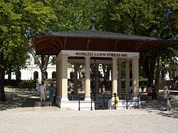A Balaton-part közelében fakadó savanyúvízforrásokról már a 17. században tudtak. Szerepük csak akkor vált jelentőssé, amikor felmelegített vizüket gyógyfürdőzésre kezdték el használni és 1772-ben Füredet hivatalosan is gyógyfürdővé nyilvánították. A füredi víz ihlette Fejér Antal „A füredi savanyú viznek hasznárúl” című költeményét, amelyben így dicséri a forrást:
Télen a városi ivóvíz egy jóízű édesvízforrásból, a Siskéből származik. A városban még számos foglalt és foglalatlan, főleg savanyúvíz-forrás található. Az egyik legnépszerűbb forrás Tihany felé közeledve, a település határában, a hajógyár mellett található, a nagy parkolóban, melynél sokan oltják szomjukat, de a helyi szokás szerint az ott élők több litert visznek magukkal palackokban a rendkívül gazdag ásványi anyagokban bővelkedő vízből otthoni fogyasztásra.
A Tagore Sétány
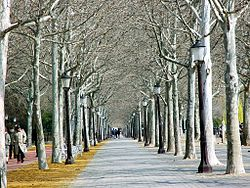Rabindranáth Tagore 1926. november 1-jén érkezett a szanatóriumba, majd gyógyulásának örömére fát ültetett. E fa előtt 1956-ban egy indiai küldöttség felavatta Tagore bronzszobrát, és 1957-től a korábban Deák Ferencről elnevezett sétány is az ő nevét viseli. A fa mellé emléktáblát tettek, amelyen a költő ez alkalomra írt verse olvasható. Tagore példáját először indiai politikusok követték, s ezután néhány év alatt hagyománnyá vált, hogy az itt megfordult híres személyiségek fát ültetnek a parkban. Marx György fizikus kezdeményezésére a Nobel-díjasokkal folytatták a sort, őket különféle hírességek követték, napjainkban pedig magyar politikusok szaporítják az ültetett fák és emléktáblák számát. Fát ültetett itt többek között: Farkas Bertalan és űrhajóstársa, Valerij Kubaszov, Leonov, a Gandhik, Göncz Árpád, Benoit Mandelbrot, Wigner Jenő és több magyar Nobel-díjas.
Emellett szobra vagy mellszobra van itt Széchenyinek, Kisfaludy Károlynak, Deák Ferencnek, valamint Salvatore Quasimodo olasz költőnek, akinek a tiszteletére évente rendeznek költői versenyeket.
Szent Mihály templomrom (Papsoka) – 11–12. század
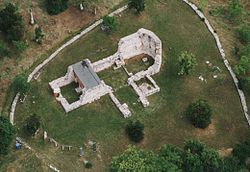Szívkórház (1728). A mai épületek 1836–1871 között épültek.
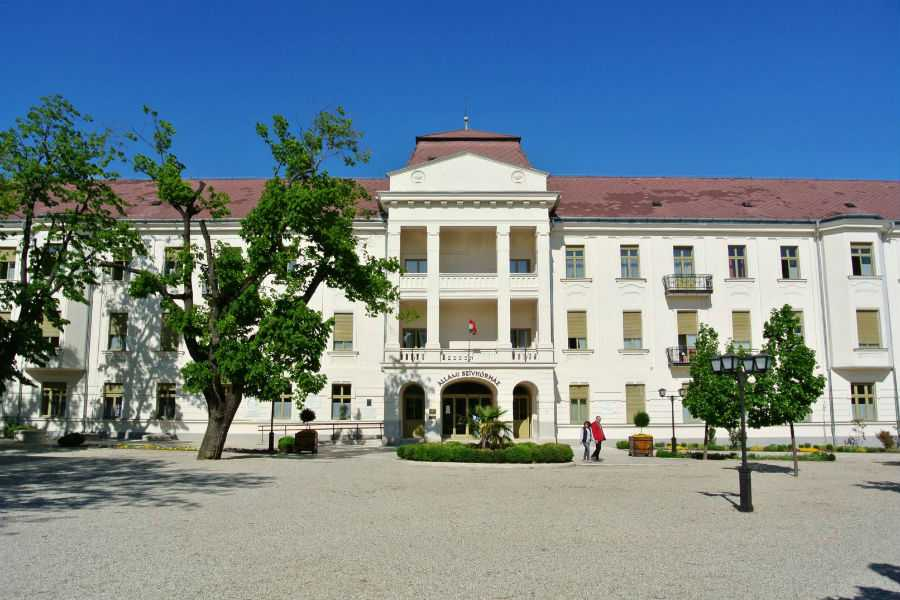Széchényi-kastély (1792). Építtette Széchényi Ferenc, eredetileg barokk stílusban, az 1871. évi átépítéskor eklektikus elemekkel alakították át – ma Kertészeti Szakközépiskola
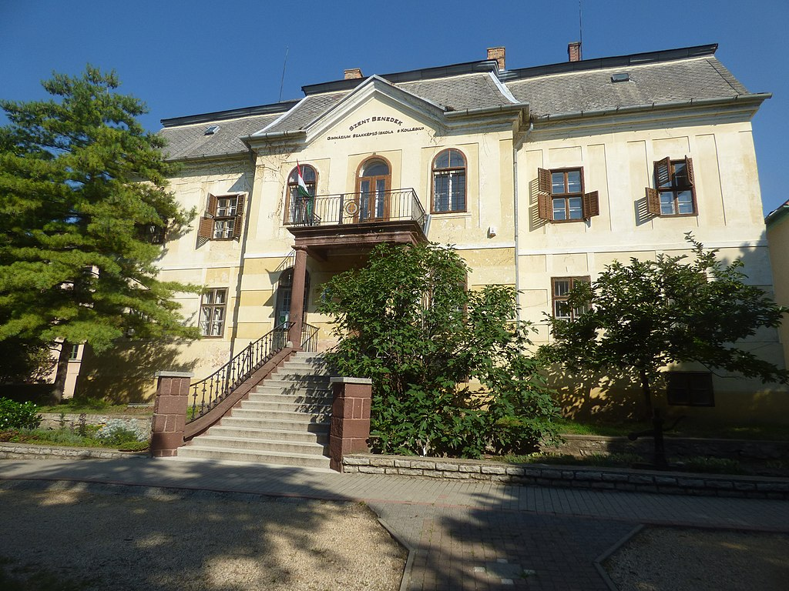Horváth-ház (1799), tervezője Lechner Mátyás – a Balaton vidékének legnagyobb, copf stílusú épülete. A ház falán elhelyezett tábla szerint a Szentgyörgyi Horváth család építtette 1796–98-ban.
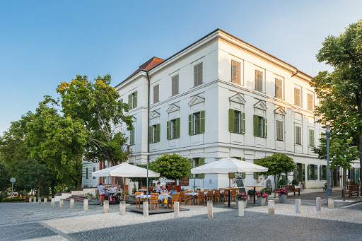Református („fehér”) templom – 1830 – klasszicista és copf stílusban épült
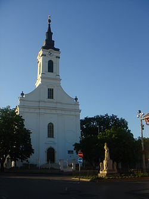Klasszicista kerektemplom (1846)
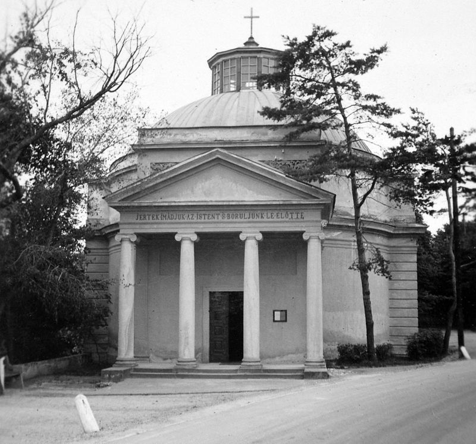Villák
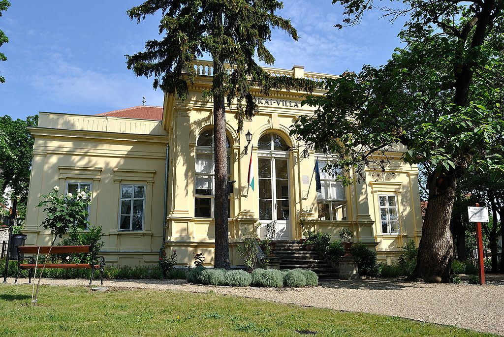 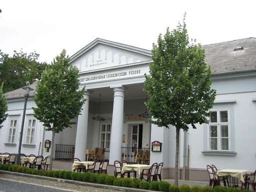Siske utaci parasztházak
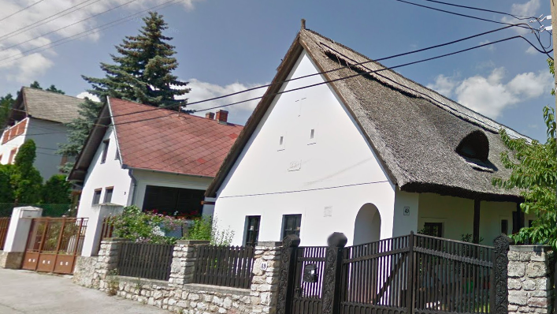Koloska volgy és további túristautak
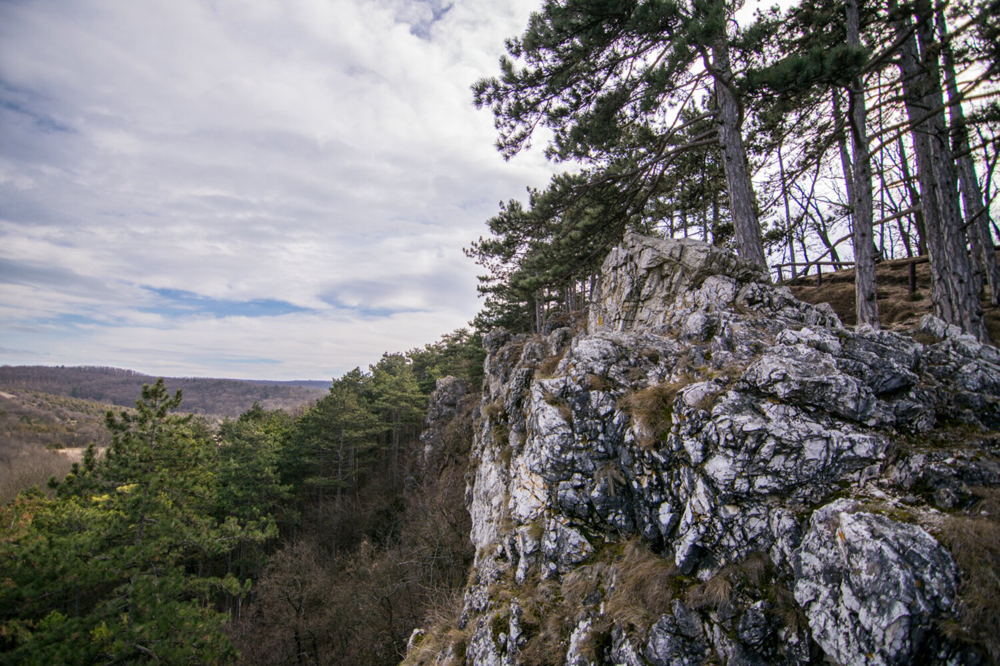Túristatérkép a kornyékrol ezen a térképen tekinthelto meg